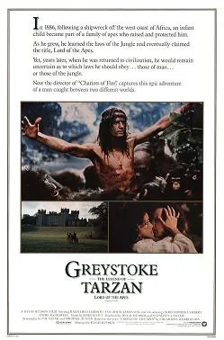

The genetics
There is no genetic science in the film; it qualifies as a nature versus nurture story, and its director, Hugh Hudson, framed it explicitly as 'the battle of nature and nurture, nature and culture'. John is human by birth and ape by upbringing. His human nature shows when he recognises his difference in a mirror and when he picks up language as a natural mimic; his upbringing shows in his ape behaviour, his loyalty to his ape family and his revulsion at how Victorian society treats animals. The film gives weight to both: he can become an earl, but he chooses to go back to the jungle. Hudson described the theme as a balance between two forces that 'shouldn't be opposing at all'. Real cases of children raised in isolation suggest that early deprivation, especially of language, is very hard to make up, so a feral child adapting this well is a romantic fiction.
The story
In 1886 John Clayton, heir to the Earl of Greystoke, and his pregnant wife are shipwrecked on the African coast. Their son is born, his mother dies of malaria and his father is killed by apes, and a female ape who has lost her own infant adopts the baby. The boy grows up as a member of the ape troop, discovers at his parents' treehouse that he looks different from his family, and becomes a strong, resourceful young man. Years later he nurses a wounded Belgian explorer, Phillippe d'Arnot, who teaches him English, works out who he is and takes him to the Greystoke estate in Scotland. His grandfather welcomes him and the American ward Jane falls in love with him, but John cannot fit into aristocratic society, and after his ape father is shot in London he returns to the jungle.